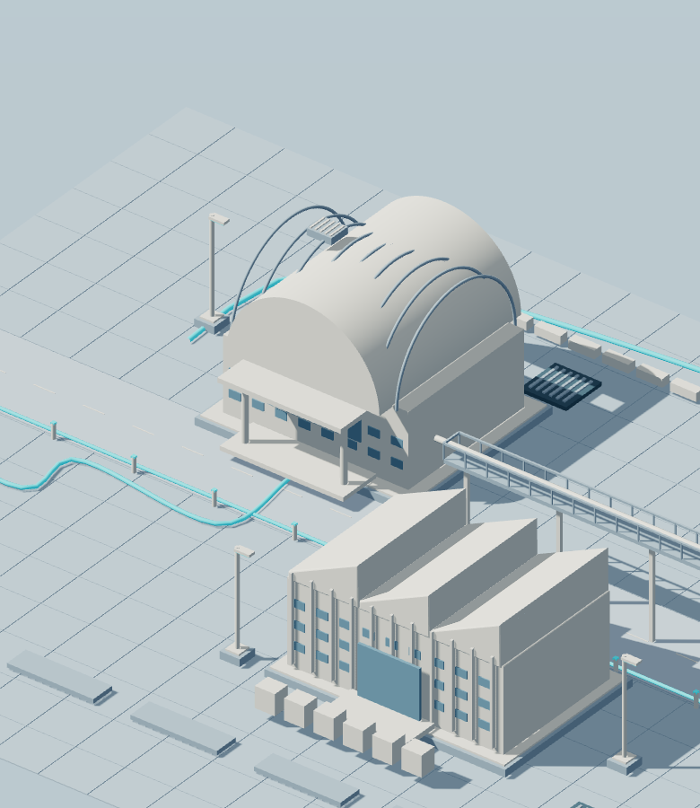
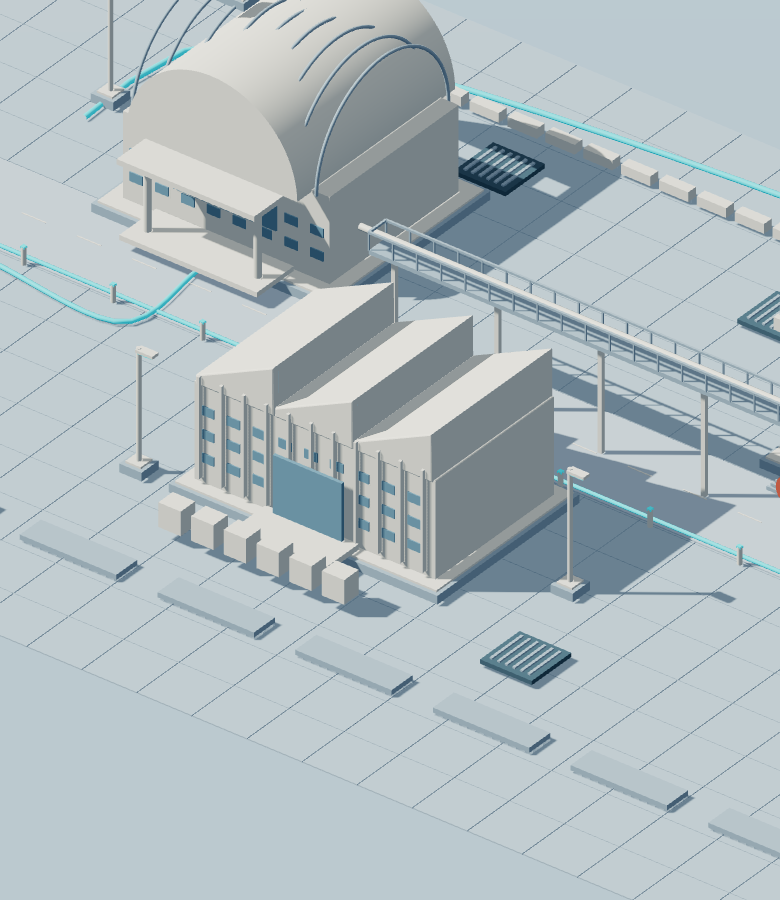
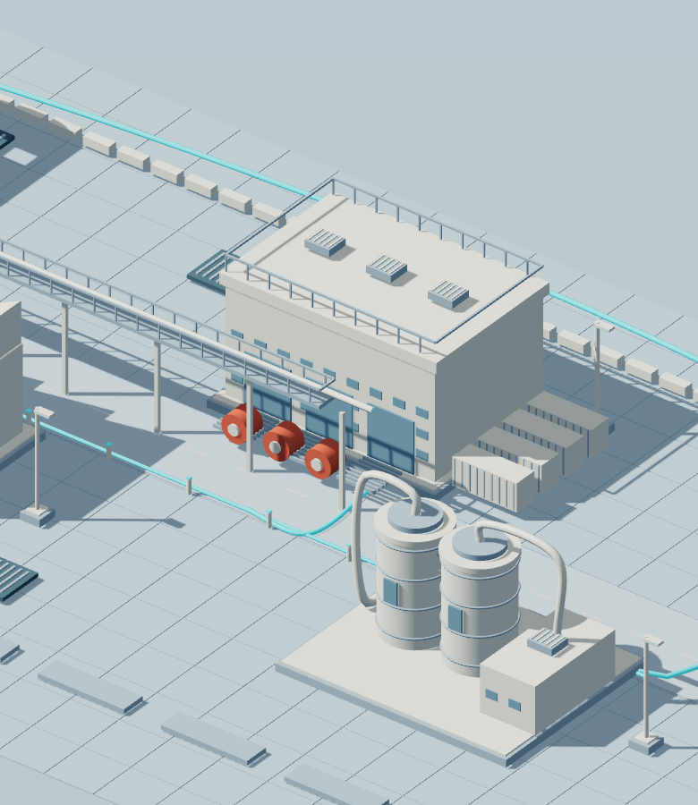
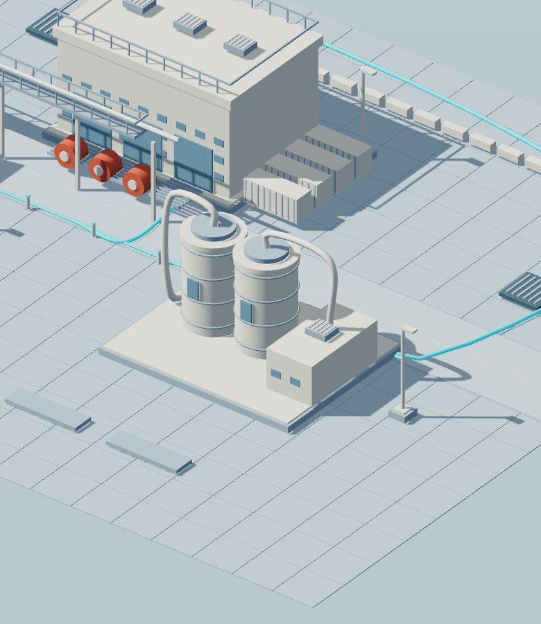

Work,
in motion.
I’m Victor. I turn software requirements into something people can use — and keep working with.
Follow the workFirst, understand
the work.
Before code, there’s a conversation. What needs to change? Who depends on it? Where does the current process get in the way?
I work through requirements and coordinate with the people involved to make the problem clear. In ERP, a change is rarely isolated: the surrounding business process matters too.

Give the idea
a workable shape.
I translate requirements into a technical approach: what belongs where, how the parts connect, and what needs to be considered before implementation.
Dynamics 365 Finance & Operations is a grounding part of my practice. I care about solutions that fit the system they live in, rather than treating every request as a blank slate.

Build it.
Check it. Put it to use.
I work through implementation, testing and deployment, with the original need in view. Writing code is one part of getting a change ready for the people who will use it.
Cross-team coordination stays part of that process. I want the handoff between a request, its implementation and its release to be understandable — not a mystery that only the developer can untangle.

The work doesn’t
end at release.
Support belongs to development too. I stay interested in how a solution behaves in use, what needs attention, and what the next question reveals.
My responsibilities span the whole path: requirements, design, implementation, testing, deployment, support and coordination. That continuity is what this little landscape is about.
Meet the person behind the practice
One person.
The whole path.
ABOUT VICTORI’m a software developer and problem solver. I like being close enough to a problem to understand it, and close enough to the implementation to help make it work.
My experience is grounded in Dynamics 365 F&O and ERP. My work reaches from requirements and technical design through implementation, testing, deployment and support, with coordination across the people and teams involved.
I’m not presenting a company or an invented catalogue of client projects here. This is a look at my practice, the things I’m curious about, and the kinds of conversations I’m open to.
A practical way
of thinking.
I try to keep the technical decision connected to the actual need. Understanding a process, working through its dependencies and communicating clearly are part of software development — not tasks that happen somewhere else.
The four chapters above describe responsibilities, not a promise that every project follows an identical formula. The useful question is always: what does this particular piece of work need?
Still curious.
I’m interested in home servers, Raspberry Pi and the small systems you can build and learn from yourself. There’s something satisfying about understanding the layers beneath an application.
I’m curious about how AI can assist work processes and web applications. I want to explore where it is useful while keeping the problem, the reasoning and the responsibility in human hands.
A few things
worth asking.
WORKING TOGETHERWhat kind of freelance work fits?
Contained software needs for individuals and small businesses are the best starting point for a conversation. I’m open to discussing remote, evening or asynchronous work where the scope and expectations fit alongside my full-time employment. Availability and suitability need to be agreed, not assumed.
Are you available full-time?
I’m currently employed full-time. Freelance conversations need to respect that commitment. I’m also interested in discussing senior developer and technical-lead career opportunities; that is a separate conversation from taking on a freelance task.
Is your work only Dynamics 365?
Dynamics 365 F&O and ERP ground my experience, but my interests also include end-to-end software, AI-assisted web apps and work processes. Rather than imply I cover every technology, I’d start by understanding your need and discussing whether it matches my experience.
Are these buildings real projects?
No. The landscape is an original illustration of a development process. It isn’t a real installation, a client site or evidence of industrial-scale delivery. The responsibilities described alongside it are the meaningful part.
What should I include when reaching out?
Tell me what you’re trying to change, the context or system involved, and any constraints that matter. For freelance work, a rough scope and your expectations around timing help establish whether there’s a sensible fit. For a career conversation, share the role and its responsibilities.
Let’s find out
what’s workable.
Have a contained software need, or a senior / technical-lead opportunity worth discussing?
I’m employed full-time, so freelance availability is limited to work that fits remotely, in evenings or asynchronously. Let’s start with the context, not a promise.
Start a conversation on LinkedIn Opens LinkedIn in a new tab. No form or message is sent by this preview.